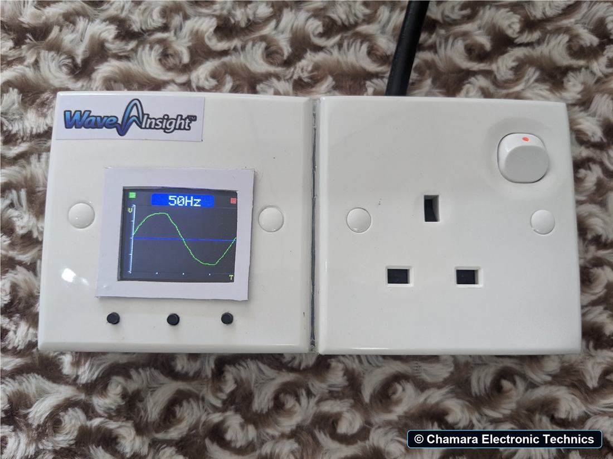

Standalone · no Wi-Fi
Wave Insight Wi-100
A compact analyzer for viewing AC waveform shape and comparing it with a saved reference.
- Live waveform display
- Reference waveform comparison
- Frequency measurement up to 200 Hz
- Adjustable comparison sensitivity